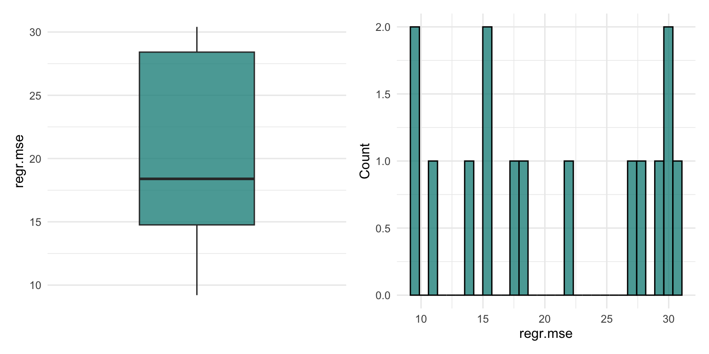
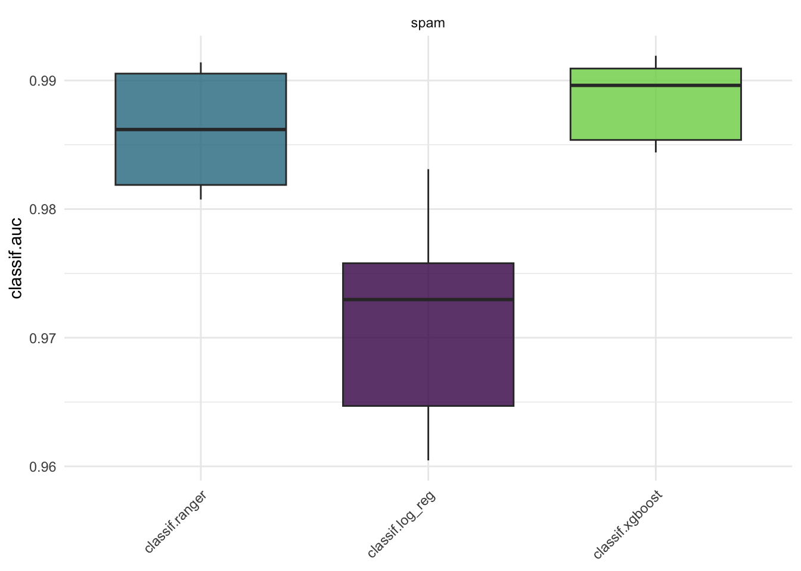
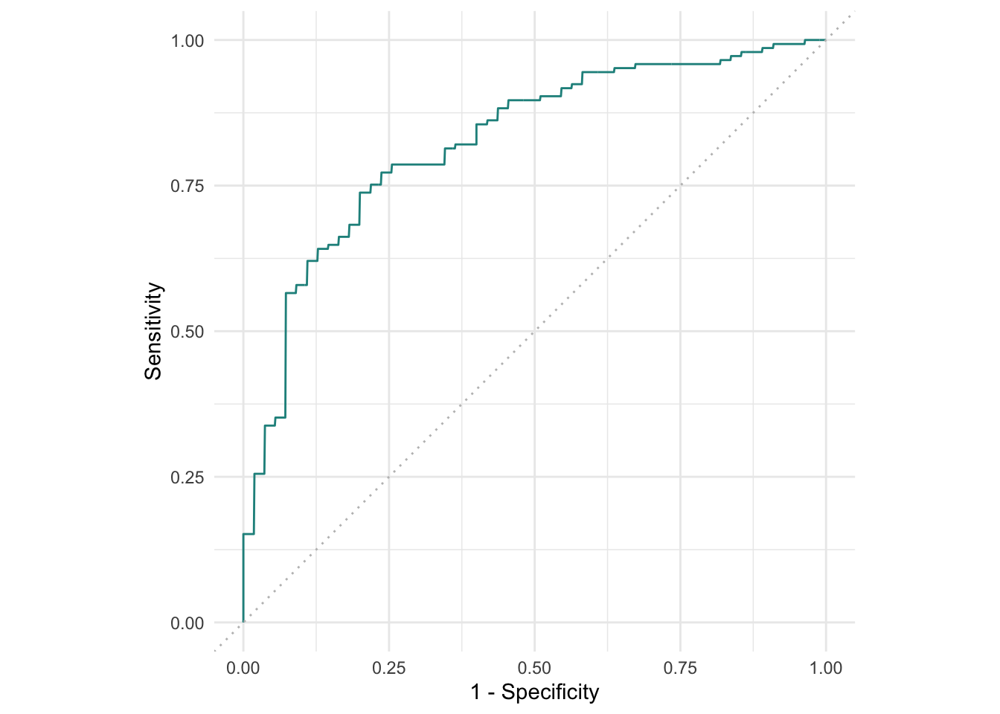
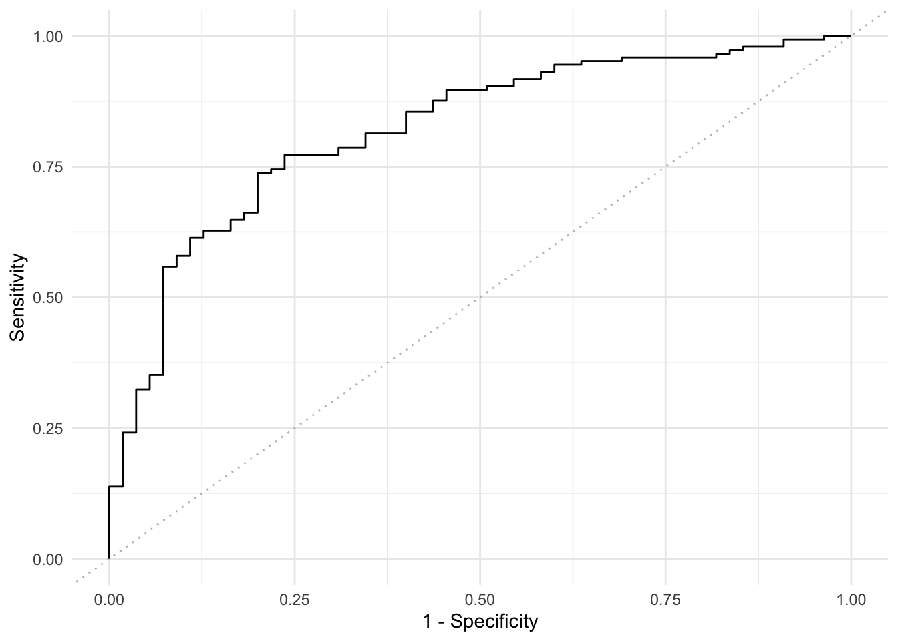
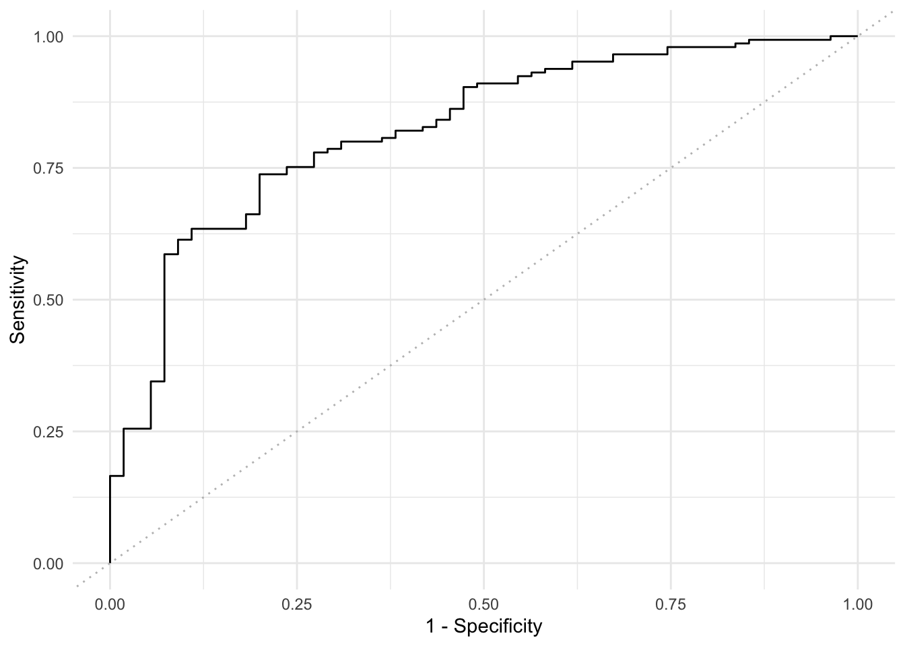

library(mlr3)
library(mlr3viz)
library(mlr3learners)
library(mlr3data)
library(ggplot2)
library(patchwork)
library(data.table)
options(datatable.print.nrows = 20)Introduction
I am attempting to learn how to use {mlr3} (Lang et al. 2019), by reading through the book Applied Machine Learning Using mlr3 in R (Bischl et al. 2024).
Lang, Michel, Martin Binder, Jakob Richter, Patrick Schratz, Florian Pfisterer, Stefan Coors, Quay Au, Giuseppe Casalicchio, Lars Kotthoff, and Bernd Bischl. 2019. “mlr3: A Modern Object-Oriented Machine Learning Framework in R.” Journal of Open Source Software, December. https://doi.org/10.21105/joss.01903.
Bischl, Bernd, Raphael Sonabend, Lars Kotthoff, and Michel Lang, eds. 2024. Applied Machine Learning Using mlr3 in R. CRC Press. https://mlr3book.mlr-org.com.
My previous posts include:
- Part one:
- Create a classification tree model to predict diabetes.
- Look at the confusion matrix and create measures without using {mlr3measures}.
- Change the thresholds in the model.
In this second blog post, I am going through the exercises given in Section 3 (Casalicchio and Burk 2024). This involves using repeated cross-validation resampling, using a custom resampling strategy, and creating a function that produces a ROC.
Casalicchio, Giuseppe, and Lukas Burk. 2024. “Evaluation and Benchmarking.” In Applied Machine Learning Using mlr3 in R, edited by Bernd Bischl, Raphael Sonabend, Lars Kotthoff, and Michel Lang. CRC Press. https://mlr3book.mlr-org.com/evaluation_and_benchmarking.html.
Prerequisites
Exercises
- Apply a repeated cross-validation resampling strategy on
tsk("mtcars")and evaluate the performance oflrn("regr.rpart").- Use five repeats of three folds each.
- Calculate the MSE for each iteration and visualize the result.
- Finally, calculate the aggregated performance score.
- Use
tsk("spam")and five-fold CV to benchmarklrn("classif.ranger"),lrn("classif.log_reg"), andlrn("classif.xgboost", nrounds = 100)with respect to AUC.- Which learner appears to perform best?
- How confident are you in your conclusion?
- Think about the stability of results and investigate this by re-running the experiment with different seeds.
- What can be done to improve this?
- A colleague reports a 93.1% classification accuracy using
lrn("classif.rpart")ontsk("penguins_simple").- You want to reproduce their results and ask them about their resampling strategy.
- They said they used a custom three-fold CV with folds assigned as
factor(task$row_ids %% 3). - See if you can reproduce their results.
- (*) Program your own ROC plotting function without using
mlr3’sautoplot()function.- The signature of your function should be
my_roc_plot(task, learner, train_indices, test_indices). - Your function should use the
$set_threshold()method ofPrediction, as well asmlr3measures.
- The signature of your function should be
First, let’s suppress all messaging unless it’s a warning:1
1 See Section 10.3 of the tutorial for more information about mlr3 logging output)
lgr::get_logger("mlr3")$set_threshold("warn")Question 1
Apply a repeated cross-validation resampling strategy on tsk("mtcars") and evaluate the performance of lrn("regr.rpart").
- Use five repeats of three folds each.
- Calculate the MSE for each iteration and visualize the result.
- Finally, calculate the aggregated performance score.
Answer
First, I’ll load the Task, Learner, and create the rsmp() object.
tsk_mtcars <- tsk("mtcars")
tsk_mtcars<TaskRegr:mtcars> (32 x 11): Motor Trends
* Target: mpg
* Properties: -
* Features (10):
- dbl (10): am, carb, cyl, disp, drat, gear, hp, qsec, vs, wt# load learner
lrn_rpart <- lrn("regr.rpart")
lrn_rpart<LearnerRegrRpart:regr.rpart>: Regression Tree
* Model: -
* Parameters: xval=0
* Packages: mlr3, rpart
* Predict Types: [response]
* Feature Types: logical, integer, numeric, factor, ordered
* Properties: importance, missings, selected_features, weights# load resampling method: 5 lots of three-fold CV
rcv53 = rsmp("repeated_cv", repeats = 5, folds = 3)
rcv53<ResamplingRepeatedCV>: Repeated Cross-Validation
* Iterations: 15
* Instantiated: FALSE
* Parameters: folds=3, repeats=5Now, I’ll use the resample() function to run the resampling strategy.
rr <- resample(tsk_mtcars, lrn_rpart, rcv53)
rr<ResampleResult> with 15 resampling iterations
task_id learner_id resampling_id iteration prediction_test warnings errors
mtcars regr.rpart repeated_cv 1 <PredictionRegr> 0 0
mtcars regr.rpart repeated_cv 2 <PredictionRegr> 0 0
mtcars regr.rpart repeated_cv 3 <PredictionRegr> 0 0
mtcars regr.rpart repeated_cv 4 <PredictionRegr> 0 0
mtcars regr.rpart repeated_cv 5 <PredictionRegr> 0 0
mtcars regr.rpart repeated_cv 6 <PredictionRegr> 0 0
mtcars regr.rpart repeated_cv 7 <PredictionRegr> 0 0
mtcars regr.rpart repeated_cv 8 <PredictionRegr> 0 0
mtcars regr.rpart repeated_cv 9 <PredictionRegr> 0 0
mtcars regr.rpart repeated_cv 10 <PredictionRegr> 0 0
mtcars regr.rpart repeated_cv 11 <PredictionRegr> 0 0
mtcars regr.rpart repeated_cv 12 <PredictionRegr> 0 0
mtcars regr.rpart repeated_cv 13 <PredictionRegr> 0 0
mtcars regr.rpart repeated_cv 14 <PredictionRegr> 0 0
mtcars regr.rpart repeated_cv 15 <PredictionRegr> 0 0Calculating the MSE for each iteration requires running $score().
rr_mse <- rr$score(msr("regr.mse"))
rr_mse task_id learner_id resampling_id iteration regr.mse
<char> <char> <char> <int> <num>
1: mtcars regr.rpart repeated_cv 1 14.547959
2: mtcars regr.rpart repeated_cv 2 20.500724
3: mtcars regr.rpart repeated_cv 3 12.901045
4: mtcars regr.rpart repeated_cv 4 17.847028
5: mtcars regr.rpart repeated_cv 5 13.558418
6: mtcars regr.rpart repeated_cv 6 13.856750
7: mtcars regr.rpart repeated_cv 7 22.489190
8: mtcars regr.rpart repeated_cv 8 19.020020
9: mtcars regr.rpart repeated_cv 9 9.775333
10: mtcars regr.rpart repeated_cv 10 31.090450
11: mtcars regr.rpart repeated_cv 11 20.193302
12: mtcars regr.rpart repeated_cv 12 33.121017
13: mtcars regr.rpart repeated_cv 13 27.174212
14: mtcars regr.rpart repeated_cv 14 29.727324
15: mtcars regr.rpart repeated_cv 15 8.674896
Hidden columns: task, learner, resampling, prediction_testLet’s plot this.
autoplot(rr, measure = msr("regr.mse"), type = "boxplot") +
autoplot(rr, measure = msr("regr.mse"), type = "histogram")`stat_bin()` using `bins = 30`. Pick better value with `binwidth`.
Aggregating the MSE scores (using macro aggregation) gives:
rr$aggregate(msr("regr.mse"))regr.mse
19.63184 Question 2
Use tsk("spam") and five-fold CV to benchmark lrn("classif.ranger"), lrn("classif.log_reg"), and lrn("classif.xgboost", nrounds = 100) with respect to AUC.
- Which learner appears to perform best?
- How confident are you in your conclusion?
- Think about the stability of results and investigate this by re-running the experiment with different seeds.
- What can be done to improve this?
Answer
Let’s load the task, learners and resampling method.
tsk_spam <- tsk("spam")
tsk_spam<TaskClassif:spam> (4601 x 58): HP Spam Detection
* Target: type
* Properties: twoclass
* Features (57):
- dbl (57): address, addresses, all, business, capitalAve,
capitalLong, capitalTotal, charDollar, charExclamation, charHash,
charRoundbracket, charSemicolon, charSquarebracket, conference,
credit, cs, data, direct, edu, email, font, free, george, hp, hpl,
internet, lab, labs, mail, make, meeting, money, num000, num1999,
num3d, num415, num650, num85, num857, order, original, our, over,
parts, people, pm, project, re, receive, remove, report, table,
technology, telnet, will, you, your# set up leaners
# first set up the 'lrns()' then modify the xgboost 'nrounds' argument
learners <- lrns(c("classif.ranger", "classif.log_reg", "classif.xgboost"),
predict_type = "prob")
# adjust 'nrounds' argument for xgboost
learners$classif.xgboost$param_set$values$nrounds <- 100
learners$classif.ranger
<LearnerClassifRanger:classif.ranger>: Random Forest
* Model: -
* Parameters: num.threads=1
* Packages: mlr3, mlr3learners, ranger
* Predict Types: response, [prob]
* Feature Types: logical, integer, numeric, character, factor, ordered
* Properties: hotstart_backward, importance, missings, multiclass,
oob_error, selected_features, twoclass, weights
$classif.log_reg
<LearnerClassifLogReg:classif.log_reg>: Logistic Regression
* Model: -
* Parameters: use_pred_offset=TRUE
* Packages: mlr3, mlr3learners, stats
* Predict Types: response, [prob]
* Feature Types: logical, integer, numeric, character, factor, ordered
* Properties: offset, twoclass, weights
$classif.xgboost
<LearnerClassifXgboost:classif.xgboost>: Extreme Gradient Boosting
* Model: -
* Parameters: nrounds=100, nthread=1, verbose=0
* Validate: NULL
* Packages: mlr3, mlr3learners, xgboost
* Predict Types: response, [prob]
* Feature Types: logical, integer, numeric
* Properties: hotstart_forward, importance, internal_tuning, missings,
multiclass, offset, twoclass, validation, weights# set up resampling
cv5 <- rsmp("cv", folds = 5)
cv5<ResamplingCV>: Cross-Validation
* Iterations: 5
* Instantiated: FALSE
* Parameters: folds=5Now we can set up the benchmark grid.
set.seed(1)
design <- benchmark_grid(tsk_spam, learners, cv5)
design task learner resampling
<char> <char> <char>
1: spam classif.ranger cv
2: spam classif.log_reg cv
3: spam classif.xgboost cvNow, see how well these perform in terms of AUC.2
2 Recall: AUC can be interpreted as the probability that a randomly chosen positive instance has a higher predicted probability of belonging to the positive class than a randomly chosen negative instance
bmr <- benchmark(design)Warning: glm.fit: fitted probabilities numerically 0 or 1 occurred
Warning: glm.fit: fitted probabilities numerically 0 or 1 occurred
Warning: glm.fit: fitted probabilities numerically 0 or 1 occurred
Warning: glm.fit: fitted probabilities numerically 0 or 1 occurred
Warning: glm.fit: fitted probabilities numerically 0 or 1 occurredbmr$score(msr("classif.auc"))[, .(learner_id, iteration, classif.auc)] learner_id iteration classif.auc
<char> <int> <num>
1: classif.ranger 1 0.9905328
2: classif.ranger 2 0.9807452
3: classif.ranger 3 0.9861848
4: classif.ranger 4 0.9818771
5: classif.ranger 5 0.9914047
6: classif.log_reg 1 0.9729649
7: classif.log_reg 2 0.9604636
8: classif.log_reg 3 0.9831002
9: classif.log_reg 4 0.9646964
10: classif.log_reg 5 0.9757900
11: classif.xgboost 1 0.9896168
12: classif.xgboost 2 0.9844034
13: classif.xgboost 3 0.9909272
14: classif.xgboost 4 0.9853751
15: classif.xgboost 5 0.9919197And let’s aggregate by Learner.
bmr$aggregate(msr("classif.auc")) nr task_id learner_id resampling_id iters classif.auc
<int> <char> <char> <char> <int> <num>
1: 1 spam classif.ranger cv 5 0.9861489
2: 2 spam classif.log_reg cv 5 0.9714030
3: 3 spam classif.xgboost cv 5 0.9884484
Hidden columns: resample_resultautoplot(bmr, measure = msr("classif.auc"))
So, from a naive look at this, it appears that the XGBoost model performs the best (highest AUC). However, the results from all three of these models appear very similar, and I would maybe prefer “simpler” models over more flexible ones in this case (here, the logistic regression model).
If we run this 5 times with different seeds, let’s see how the AUC varies.
bmr_auc <- rbindlist(lapply(seq_len(5), function(i) {
tmp_seed <- i * 100
set.seed(tmp_seed)
design <- benchmark_grid(tsk_spam, learners, cv5)
bmr <- benchmark(design)
data.table(
seed = tmp_seed,
auc = bmr$aggregate(msr("classif.auc"))
)
})
)
bmr_auc[, .(seed, auc.learner_id, auc.classif.auc)] seed auc.learner_id auc.classif.auc
<num> <char> <num>
1: 100 classif.ranger 0.9866242
2: 100 classif.log_reg 0.9708618
3: 100 classif.xgboost 0.9883961
4: 200 classif.ranger 0.9864776
5: 200 classif.log_reg 0.9705954
6: 200 classif.xgboost 0.9879994
7: 300 classif.ranger 0.9855379
8: 300 classif.log_reg 0.9710461
9: 300 classif.xgboost 0.9878387
10: 400 classif.ranger 0.9866107
11: 400 classif.log_reg 0.9697749
12: 400 classif.xgboost 0.9888800
13: 500 classif.ranger 0.9862768
14: 500 classif.log_reg 0.9702488
15: 500 classif.xgboost 0.9879613# some summary stats
bmr_auc[, as.list(summary(auc.classif.auc)), by = auc.learner_id] auc.learner_id Min. 1st Qu. Median Mean 3rd Qu. Max.
<char> <num> <num> <num> <num> <num> <num>
1: classif.ranger 0.9855379 0.9862768 0.9864776 0.9863055 0.9866107 0.9866242
2: classif.log_reg 0.9697749 0.9702488 0.9705954 0.9705054 0.9708618 0.9710461
3: classif.xgboost 0.9878387 0.9879613 0.9879994 0.9882151 0.9883961 0.9888800Although XGBoost achieved the highest AUC on average, the difference compared to ranger was minimal across repeated runs (although XGBoost always very slighly outperforms the random forest model, after aggregation). Confidence intervals or additional repeats could provide better insight into whether the observed difference is meaningful. The choice of model will depend on how important that small difference is in the AUC compared to model complexity.
Question 3
A colleague reports a \(93.1\%\) classification accuracy using lrn("classif.rpart") on tsk("penguins_simple").
- You want to reproduce their results and ask them about their resampling strategy.
- They said they used a custom three-fold CV with folds assigned as
factor(task$row_ids %% 3). - See if you can reproduce their results.
Answer
Let’s have a look at the Task. This task doesn’t seem to be in included in the default {mlr3} package, but is referenced in the {mlr3data} (Becker 2024) docs.
Becker, Marc. 2024. Mlr3data: Collection of Machine Learning Data Sets for ’Mlr3’. https://github.com/mlr-org/mlr3data.
tsk_penguins <- tsk("penguins_simple")
tsk_penguins<TaskClassif:penguins> (333 x 11): Simplified Palmer Penguins
* Target: species
* Properties: multiclass
* Features (10):
- dbl (7): bill_depth, bill_length, island.Biscoe, island.Dream,
island.Torgersen, sex.female, sex.male
- int (3): body_mass, flipper_length, yearOK, so this is a multi-class classification task, using 10 features to predict the species of the penguin.
They said they used a custom three-fold CV, so let’s try and reproduce this. By looking at factor(tsk_penguins$row_ids %% 3), we can see that the CV is putting every third observation into the same fold. This feels weird and wrong, but fine.3
3 This folding strategy does not ensure class balance within each fold and may lead to biased performance estimates, particularly in smaller datasets.
# load learner
lrn_rpart <- lrn("classif.rpart")
lrn_rpart<LearnerClassifRpart:classif.rpart>: Classification Tree
* Model: -
* Parameters: xval=0
* Packages: mlr3, rpart
* Predict Types: [response], prob
* Feature Types: logical, integer, numeric, factor, ordered
* Properties: importance, missings, multiclass, selected_features,
twoclass, weights# create custom resampling strategy
rsmp_custom = rsmp("custom_cv")
folds <- factor(tsk_penguins$row_ids %% 3)
rsmp_custom$instantiate(tsk_penguins, f = folds)
rr <- resample(tsk_penguins, lrn_rpart, rsmp_custom)
rr$predictions()[[1]]
<PredictionClassif> for 111 observations:
row_ids truth response
3 Adelie Adelie
6 Adelie Adelie
9 Adelie Adelie
--- --- ---
327 Chinstrap Chinstrap
330 Chinstrap Adelie
333 Chinstrap Chinstrap
[[2]]
<PredictionClassif> for 111 observations:
row_ids truth response
1 Adelie Adelie
4 Adelie Adelie
7 Adelie Adelie
--- --- ---
325 Chinstrap Chinstrap
328 Chinstrap Chinstrap
331 Chinstrap Chinstrap
[[3]]
<PredictionClassif> for 111 observations:
row_ids truth response
2 Adelie Adelie
5 Adelie Adelie
8 Adelie Adelie
--- --- ---
326 Chinstrap Gentoo
329 Chinstrap Gentoo
332 Chinstrap Gentoorr$score(msr("classif.acc")) task_id learner_id resampling_id iteration classif.acc
<char> <char> <char> <int> <num>
1: penguins classif.rpart custom_cv 1 0.9369369
2: penguins classif.rpart custom_cv 2 0.9189189
3: penguins classif.rpart custom_cv 3 0.9369369
Hidden columns: task, learner, resampling, prediction_testrr$aggregate(msr("classif.acc"))classif.acc
0.9309309 So, we get a model with \(93.1\%\) accuracy, as required.4
4 Would the results change much with, for example, grouped resampling? I should look at this at some point.
Question 4
(*) Program your own ROC plotting function without using mlr3’s autoplot() function.
- The signature of your function should be
my_roc_plot(task, learner, train_indices, test_indices). - Your function should use the
$set_threshold()method ofPrediction, as well asmlr3measures.
Answer
Let’s first have a look at the output from using autoplot(). I’ll use the german_credit task.
tsk_german = tsk("german_credit")
tsk_german<TaskClassif:german_credit> (1000 x 21): German Credit
* Target: credit_risk
* Properties: twoclass
* Features (20):
- fct (14): credit_history, employment_duration, foreign_worker,
housing, job, other_debtors, other_installment_plans,
people_liable, personal_status_sex, property, purpose, savings,
status, telephone
- int (3): age, amount, duration
- ord (3): installment_rate, number_credits, present_residencelrn_ranger = lrn("classif.ranger", predict_type = "prob")
splits = partition(tsk_german, ratio = 0.8)
lrn_ranger$train(tsk_german, splits$train)
prediction = lrn_ranger$predict(tsk_german, splits$test)autoplot(prediction, type = "roc")
First, I’ll do all the steps to create the ROC, then I’ll wrap this in a function, my_roc_plot().
Creating the ROC
OK – so I need to use $set_threshold() to obtain predictions over the range of thresholds. Then, I need to use {mlr3measures} (Lang, Becker, and Koers 2024) to compute the TPR (Sensitivity) and FPR (\(1 -\) Specificity) and plot these all on a lovely graph.
Lang, Michel, Marc Becker, and Lona Koers. 2024. Mlr3measures: Performance Measures for ’Mlr3’. https://CRAN.R-project.org/package=mlr3measures.
- Sensitivity
- (true positive rate) is the probability of a positive test result, conditioned on the individual truly being positive.
- Specificity
- (true negative rate) is the probability of a negative test result, conditioned on the individual truly being negative.
I’ll first check to see which is the positive outcome in the Task.
tsk_german$positive[1] "good"# also, by looking at the help file 'prediction$help()'
# can see that the positive class is the first level of '$truth', i.e.
levels(prediction$truth)[1][1] "good"So having good credit is the positive outcome here.
Now, I’ll create a vector of thresholds5 and then obtain predictions and calculate the measures.
5 Thresholds were discussed in Section 2.5.4 of the mlr3 tutorial, and I looked at them in Question 3 of my previous post
positive_class <- levels(prediction$truth)[1]
thresholds <- seq(0, 1, length = 101)
tsk_german_measures <- rbindlist(
lapply(thresholds, function(j) {
prediction$set_threshold(j)
tpr_tmp <- mlr3measures::tpr(truth = prediction$truth,
response = prediction$response,
positive = positive_class)
fpr_tmp <- mlr3measures::fpr(truth = prediction$truth,
response = prediction$response,
positive = positive_class)
data.table(threshold = j,
tpr = tpr_tmp,
fpr = fpr_tmp)
}
)
)
# order by increasing fpr, and tpr
# s.t. the step function avoids spikes
# spikes are happening as seed not set in $set_threshold(),
# so possible to get non-monotonic tpr/ fpr
# also put them in descending threshold order, just to make the data look nicer.
tsk_german_measures <- tsk_german_measures[order(fpr, tpr, -threshold)]
tsk_german_measures threshold tpr fpr
<num> <num> <num>
1: 1.00 0.000000000 0
2: 0.99 0.000000000 0
3: 0.98 0.006896552 0
4: 0.97 0.013793103 0
5: 0.96 0.013793103 0
---
97: 0.04 1.000000000 1
98: 0.03 1.000000000 1
99: 0.02 1.000000000 1
100: 0.01 1.000000000 1
101: 0.00 1.000000000 1OK, I think I’ve got everything required to plot the ROC.
ggplot(tsk_german_measures, aes(x = fpr, y = tpr)) +
geom_step() +
geom_abline(intercept = 0, slope = 1,
linetype = "dotted", colour = "grey") +
labs(x = "1 - Specificity",
y = "Sensitivity") +
theme_minimal()
Making the function my_roc_plot()
my_roc_plot <- function(task, learner, train_indices, test_indices) {
# task: a 'Task' object
# learner: a 'Learner' object
# train the learner on the task
learner$train(task, row_ids = train_indices)
# create the prediction object
prediction <- learner$predict(task, row_ids = test_indices)
# find TPR and FPR over a seq of thresholds
positive_class <- levels(prediction$truth)[1]
thresholds <- seq(0, 1, length = 101)
tpr_fpr_thresholds <- rbindlist(
lapply(thresholds, function(j) {
prediction$set_threshold(j)
tpr_tmp <- mlr3measures::tpr(truth = prediction$truth,
response = prediction$response,
positive = positive_class)
fpr_tmp <- mlr3measures::fpr(truth = prediction$truth,
response = prediction$response,
positive = positive_class)
data.table(threshold = j,
tpr = tpr_tmp,
fpr = fpr_tmp)
}
)
)
tpr_fpr_thresholds <- tpr_fpr_thresholds[order(fpr, tpr, -threshold)]
# and plot
ggplot(tpr_fpr_thresholds, aes(x = fpr, y = tpr)) +
geom_step() +
geom_abline(intercept = 0, slope = 1,
linetype = "dotted", colour = "grey") +
labs(x = "1 - Specificity",
y = "Sensitivity") +
theme_minimal()
}Let’s test it:
my_roc_plot(task = tsk_german,
learner = lrn("classif.ranger", predict_type = "prob"),
train_indices = splits$train,
test_indices = splits$test)
Cool, looks good!
Fin
Citation
BibTeX citation:
@online{smith2025,
author = {Smith, Paul},
title = {Getting {Started} with \{Mlr3\}},
date = {2025-03-17},
url = {https://pws3141.github.io/blog/posts/08-mlr3_evaluation_benchmarking/},
langid = {en}
}
For attribution, please cite this work as:
Smith, Paul. 2025. “Getting Started with {Mlr3}.” March 17,
2025. https://pws3141.github.io/blog/posts/08-mlr3_evaluation_benchmarking/.